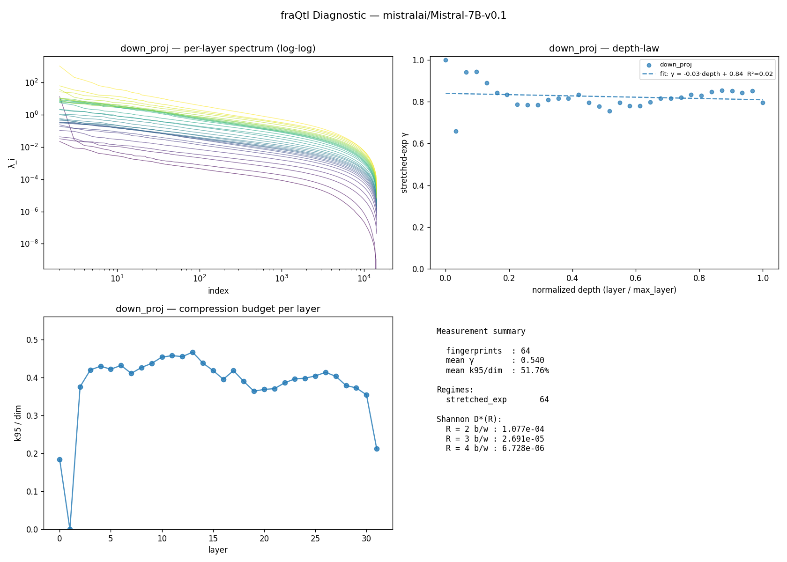

fraQtl Diagnostic — mistralai/Mistral-7B-v0.1
v0.1.1 ·
32 layers ·
projections: down_proj, o_proj ·
429.8s on cuda
TL;DR
Normal transformer, limited compression headroom.- 64/64 layers fall in the standard stretched-exponential class (KWW). 0 in other regimes, 0 unfit.
- Effective rank is 52% of dim — most eigendirections are active; rank-based compression is tight.
- Stretched-exp γ is 0.54 — near-exponential decay, harder on the head.
This is a measurement tool. For actual compression outcomes, visit https://fraqtl.ai
Measurement summary
| Metric | Value |
|---|
| Fingerprints (layer × projection) | 64 |
| Mean γ (stretched_exp regime, non-poor fits only) | 0.540 |
| Mean k95 / dim | 51.76% |
| Regimes | 64 stretched_exp |
| Fit quality | 64 good · 0 moderate · 0 poor |
Shannon rate-distortion ceiling D*(R)
geometric mean over all layers at each bit budget R. Theoretical floor, not a prediction —
the actual PPL a real compressor achieves depends on the recipe (sign correction, rank protection, etc.).
| R (b/w) | D*(R) geomean |
|---|
| 2 | 1.077e-04 |
| 3 | 2.691e-05 |
| 4 | 6.728e-06 |
Depth-law fits
| Projection | Slope | Intercept | R² | γ p10/p50/p90 | n |
|---|
| down_proj | -0.031 | 0.840 | 0.023 | 0.779 / 0.816 / 0.885 | 32 |
| o_proj | +0.044 | 0.234 | 0.056 | 0.195 / 0.252 / 0.340 | 32 |
Per-layer fingerprint (first 40)
| Layer | Proj | dim | γ | regime | fit |
k95 | k99 | knee |
|---|
| 0 | down_proj | 14336 | 0.999 | stretched_exp | good | 2644 | 5140 | 7563 |
| 0 | o_proj | 128 | 0.166 | stretched_exp | good | 29 | 51 | — |
| 1 | down_proj | 14336 | 0.658 | stretched_exp | good | 1 | 1 | — |
| 1 | o_proj | 128 | 0.357 | stretched_exp | good | 73 | 104 | — |
| 2 | down_proj | 14336 | 0.942 | stretched_exp | good | 5388 | 8450 | 9374 |
| 2 | o_proj | 128 | 0.253 | stretched_exp | good | 76 | 107 | — |
| 3 | down_proj | 14336 | 0.943 | stretched_exp | good | 6022 | 9107 | 9720 |
| 3 | o_proj | 128 | 0.237 | stretched_exp | good | 86 | 114 | — |
| 4 | down_proj | 14336 | 0.889 | stretched_exp | good | 6163 | 9334 | 9951 |
| 4 | o_proj | 128 | 0.231 | stretched_exp | good | 81 | 112 | — |
| 5 | down_proj | 14336 | 0.842 | stretched_exp | good | 6050 | 9306 | 10089 |
| 5 | o_proj | 128 | 0.254 | stretched_exp | good | 89 | 116 | — |
| 6 | down_proj | 14336 | 0.834 | stretched_exp | good | 6193 | 9448 | 10158 |
| 6 | o_proj | 128 | 0.219 | stretched_exp | good | 82 | 112 | — |
| 7 | down_proj | 14336 | 0.786 | stretched_exp | good | 5892 | 9259 | 10221 |
| 7 | o_proj | 128 | 0.256 | stretched_exp | good | 82 | 111 | — |
| 8 | down_proj | 14336 | 0.785 | stretched_exp | good | 6114 | 9452 | 10282 |
| 8 | o_proj | 128 | 0.172 | stretched_exp | good | 89 | 116 | — |
| 9 | down_proj | 14336 | 0.785 | stretched_exp | good | 6271 | 9586 | 10320 |
| 9 | o_proj | 128 | 0.271 | stretched_exp | good | 85 | 115 | — |
| 10 | down_proj | 14336 | 0.809 | stretched_exp | good | 6508 | 9768 | 10374 |
| 10 | o_proj | 128 | 0.161 | stretched_exp | good | 88 | 115 | — |
| 11 | down_proj | 14336 | 0.815 | stretched_exp | good | 6561 | 9817 | 10370 |
| 11 | o_proj | 128 | 0.256 | stretched_exp | good | 90 | 117 | — |
| 12 | down_proj | 14336 | 0.815 | stretched_exp | good | 6527 | 9790 | 10337 |
| 12 | o_proj | 128 | 0.193 | stretched_exp | good | 83 | 109 | — |
| 13 | down_proj | 14336 | 0.834 | stretched_exp | good | 6693 | 9903 | 10354 |
| 13 | o_proj | 128 | 0.231 | stretched_exp | good | 98 | 120 | — |
| 14 | down_proj | 14336 | 0.796 | stretched_exp | good | 6282 | 9588 | 10300 |
| 14 | o_proj | 128 | 0.220 | stretched_exp | good | 92 | 118 | — |
| 15 | down_proj | 14336 | 0.779 | stretched_exp | good | 5999 | 9349 | 10226 |
| 15 | o_proj | 128 | 0.270 | stretched_exp | good | 85 | 112 | — |
| 16 | down_proj | 14336 | 0.756 | stretched_exp | good | 5670 | 9067 | 10165 |
| 16 | o_proj | 128 | 0.296 | stretched_exp | good | 92 | 118 | — |
| 17 | down_proj | 14336 | 0.796 | stretched_exp | good | 5995 | 9306 | 10174 |
| 17 | o_proj | 128 | 0.224 | stretched_exp | good | 98 | 120 | — |
| 18 | down_proj | 14336 | 0.779 | stretched_exp | good | 5588 | 8938 | 10033 |
| 18 | o_proj | 128 | 0.242 | stretched_exp | good | 85 | 115 | — |
| 19 | down_proj | 14336 | 0.779 | stretched_exp | good | 5218 | 8586 | 9908 |
| 19 | o_proj | 128 | 0.259 | stretched_exp | good | 84 | 113 | — |
Figures
(generate the PNG with report.to_png(path) — shown here if embedded)

About
This diagnostic measures information-theoretic compressibility from the input covariance
spectrum of each layer. It does not perform compression — it reports the ceiling and
shape. The fraQtl compression engine uses this fingerprint
plus additional engineering (sign correction, per-model calibration) to get closer to the
ceiling in practice.